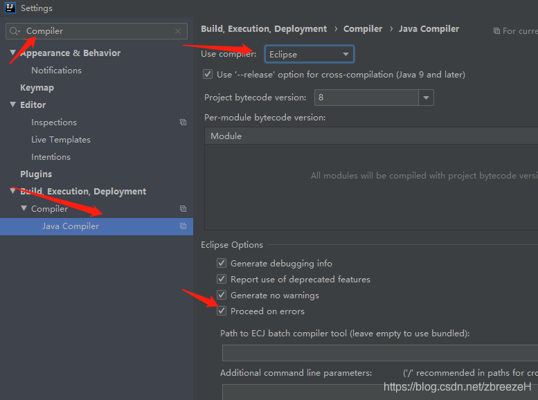

%3b' data-evernote-id='1451' class='js-evernote-checked'%3e%3c/path%3e %3c/svg%3e)
只做一下记录：
场景描述：最近退居一线互联网企业，到一家国企上班。其项目很多java文件因为特殊框架原因，不能像正常一样通过编译。但是，我需要写一个main方法来测试自己的方法，即只需要保证该类编译正常，忽略其他类的编译错误。
（1）如下图，找到java Complier设置，Use compiler选项下拉框为Eclipse，不要使用默认原生的javac。

网上的教程到这一步就完成了，但是我发现还是不能达到预期需求。
继续设置：
（2）设置启动项的配置，在最下面的那行，移除默认的build，添加为build no error check 即可，如下图：

记录一下，避免以后忘记。